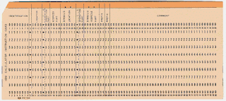
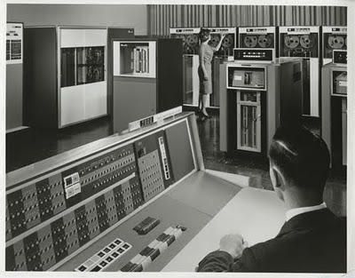
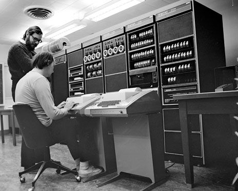
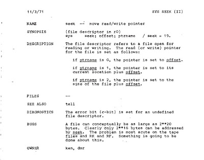
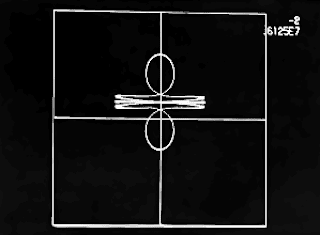
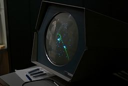
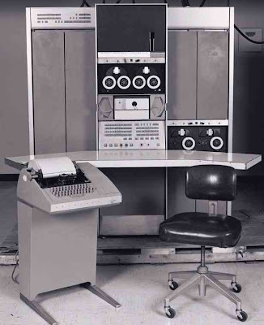
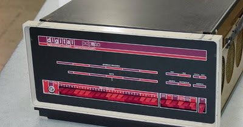
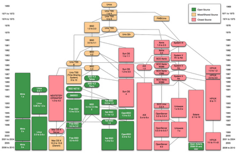

Странное рождение и долгая жизнь UNIX
Когда хотят утешить, то говорят, когда для вас закрывается одна дверь, открывается другая. Так и вышло для Кена Томпсона (Ken Thompson) и Дениса Ритчи (Dennis Ritchie), когда они создавали операционную систему UNIX - одну из самых вдохновляющих и влиятельных программ за всю историю компьютерной техники.
Что было до UNIX: Эпоха Динозавров
Для Томпсона и Ритчи дверь закрылась в марте 1969 года, когда их работодатель, American Telephone & Telegraph Co. (AT&T), вышел из совместного с Массачусетским Институтом Технологий (MIT) и General Electric проекта по созданию интерактивных систем с разделением времени под названием Multics. Метод разделения времени (time-sharing), позволяющий нескольким людям использовать один компьютер одновременно, был изобретен всего десять лет назад и использовался в системе Compatible Timesharing System (CTSS).
Совместимая система с разделением времени, Compatible Timesharing System (CTSS), была одной из первой операционных систем такого типа. Разработанная в Вычислительном центре MIT командой, возглавляемой Fernando J. Corbató, система была продемонстрирована в 1961 на компьютере IBM 709. Усовершенствованная система CTSS запускалась на машине IBM 7094 и позволяла обслуживать до 30 пользователей одновременно через модемы.
Есть сохранившееся видео тех времён, где Fernando J. Corbató доступно объясняет принцип работы системы с разделением времени.
Multics объединяла режим разделения времени с другими техническими достижениями той эпохи, позволяя соединяться с компьютером через удалённые терминалы для чтения почты, редактирования документов, запуска вычислений, и много другого. Это должно было стать огромным шагом вперёд по сравнению с тем, как компьютеры использовались ранее. А до этого была утомительная подготовка и ввод пакетных заданий на перфокартах, запускаемых последовательно одно за другим
Рискуя повредить психическому здоровью впечатлительной части юной вебдвальной аудитории, автор хотел бы напомнить, что до дискет и тем более флешек, люди использовали вот такие накопители:

Сие есть перфокарта, историю коих можно узнать на хорошо иллюстрированном сайте. А ниже показана перфолента:
Флешка приведена для сравнения того, насколько далеко и быстро ускакала Computer Science в деле хранения информации.
Компания AT&T более пяти лет инвестировала миллионы долларов в проект Multics, закупая мэйнфрэймы GE-645 и координируя усилия многих ведущих исследователей в Bell Telephone Laboratories (Bell Labs), в том числе Ken Thompson, Dennis Ritchie, Joseph F. Ossanna, Stuart Feldman, M. Douglas McIlroy, и Robert Morris. Но новая операционная система была слишком амбициозна, и оттого её разработка серьёзно отставала от графика. В конце концов, корпоративные слизняки из AT&T решили ударить по тапкам и выйти из проекта.

Мэйнфрэйм GE-645 выглядел примерно так, брутально и сурово.
После этого менеджеры Bell Labs сильно охладели к проекту разработки Multics. Такой поворот событий не мог не огорчать многих исследователей. Хотя операционная система Multics не достигла многих своих целей, она, по воспоминаниям Ритчи, предоставляла "удобный интерактивный сервис для вычисления, хорошую среду разработки, и систему, вокруг которой могло бы образоваться сообщество". Но беда пришла, и её совсем не ждали.
Справедливости ради, нужно отметить, что Multics ещё долгое время служила верой и правдой в разных академических и оборонных учреждениях. Некоторые машины с Multics составили части ARPAnet - то, что мы сейчас знаем как Internet, а тогда серьёзная сеть суровых американских вояк на случай ядерной войны. MIT's Multics был одним из первых сайтов в той сети.
Огорчённые этим событием, исследователи вернулись к использованию старой пакетной системы. В этот неблагоприятный момент, когда руководство было категорически против новых идей, казалось безрассудным продолжать разработку компьютерных операционных систем. Но это именно то, что Томпсон, Ритчи, и многие из их коллег по Bell Labs, отважились сделать. Теперь, 40 лет спустя, нам стоит поблагодарить этих исследователей за то, что они проигнорировали своих шефов и продолжили своё любимое дело, подарившее миру UNIX - одну из величайших компьютерных операционных систем всех времён и народов.

На фото - отцы UNIX: Ken Thompson [сидит] набирает программу на клавиатуре, Dennis Ritchie [стоит] рядом. Это 1972 год, вскоре после того, как они и их коллеги по Bell Labs создали UNIX.
Томпсон, Ритчи, и Rudd Canaday из Bell Labs, начали делать наброски дизайна для файловой системы. Томпсон написал основы новой операционной системы для мэйнфрейма GE-645, установленного в лаборатории. Но конец проекта Multics означал и конец GE-645. Томпсон понял, что дальнейшее программирование под GE-645 это путь в никуда.

Один из первых мануалов: Thompson (ken) и Ritchie (dmr) создали первый мануал для UNIX, один из которых показан выше. Первая версия мануала вышла в ноябре 1971.
С чего начался UNIX...
После кончины Multics в 1969 году, Томпсон потратил часть своего времени на создание компьютерной игры под названием Космические путешествия, которая моделировала все крупные тела в Солнечной системе. Игроку требовалось провести космический корабль вокруг них, пытаясь приземлиться на планеты.
Археологическая экспедиция экипажа блога во главе с автором откопала скриншот и описание игрушки Космические путешествия (Space Travel) дабы можно было заценить умопомрачительную графику:

тех времён и возможности игрушки, которые были не менее впечатляющими: лететь вперёд и назад, повернуть вправо и влево, а так же изменение масштаба экрана больше-меньше.
Важно, что Кен Томпсон фактически изобрёл UNIX только для того, чтобы поиграть в эту игрушку. А ещё говорят, что игр под UNIX/Linux нет. А они есть - вот ещё одна, крутой космический шутер Spacewar! образца 1962 года:

Проникнитесь, друзья. Это вам не Angry Birds на айфонах...
Игра, написанная для GE-645, была неуклюжа и очень дорогостояща - поиграть стоило примерно 75 долларов, потому как процессорное время стоило недёшево. Бродя по лаборатории, Томпсон наткнулся на PDP-7, мини-компьютер, созданный корпорацией Digital Equipment, и купленный его коллегами по Bell Labs. Выглядел мини-компьютер PDP-7 вот так:

PDP-7 выгодно отличался прекрасным видеовыводом, так что Томпсон переписал игрушку Космические путешествия для работы на PDP-7.
Это было куда сложнее, чем может показаться на первый взгляд. Так как отцы UNIX презирали всё существующее программное обеспечение, они должны были реализовать арифметику с плавающей точкой (отличная статья в тему, кстати - и это только основы...), и полную спецификацию графических символов для подсистемы отображения и отладки, которые непрерывно отображают содержимое положений игрушечного корабля в углу экрана. Все это было написано на ассемблере, и запускалось на компьютере GECOS, выдавая бумажные ленты для PDP-7.
После этого небольшого упражнения в программировании, произошло ещё одно событие: летом 1969 года жена Томпсона, Бонни, уехала к родителям, чтобы показать их новорожденного сына. Кен Томпсон решил воспользоваться своим временным холостяцким положением и написал за это время отличный код, который потом превратится в Unix для заброшенного мини-компьютера PDP-7.
Название Unix связана с шуткой одного из коллег Томпсона: новая операционная система поддерживает только одного пользователя (собственно, Томпсона), и он рассматривал её как выхолощенную версию Multics - потому и нарёк новую операционную систему "Un-multiplexed Information and Computing Service". Это название позже превратилось в Unix, и вот как об этом вспоминают Dennis M. Ritchie (dmr) и Ken Thompson (ken).
Всё это непотребство творилось за спиной начальства, которое ничего не подозревало об этих игрищах.
Изначально Томпсон использовал GE-645 для создания и компиляции программного обеспечения, который он затем загружал на PDP-7. Вскоре Томпсон начал разработку файловой системы и пользовательских утилит: копирование, печать, удаление, правка файлов и, естественно, командный интерпретатор. Все программы писались на компьютере GECOS и переносились на PDP-7 на бумажной ленте. Как только Ассемблер на PDP-7 заработал к концу 1969 года, Томпсон был в состоянии писать код операционной системы собственно на самом PDP-7. Это был шаг в правильном направлении. Однако Томпсон и другие исследователи знали, что миникомпьютер PDP-7 уже был устаревшей моделью, как знали они и то, что руководство лаборатории не собиралось больше разрешать исследований по операционным системам.
Подпольная разработка UNIX и первые успехи
Так что Томпсону и Ритчи нужно было проявить изобретательность, которую они блестяще продемонстрировали: в заявке они попросили начальство купить одну из новых мини-ЭВМ DEC, а именно PDP-11. Запрос был сформулирован в очень кучерявых терминах: они написали, что целью является создание инструментов для редактирования и форматирования текста (то, что мы сейчас назвали бы текстовый процессор). Тот факт, что они также должны были написать операционную систему для новой машины, чтобы запускать текстовый редактор, был всего лишь сноской.
Менеджмент клюнул на приманку, и заказ на PDP-11 был размещён в мае 1970 года. Хотя сам компьютер доставлен быстро, носители данных для него привезли лишь через полгода. В этом время, Томпсон, Ритчи и другие продолжали разрабатывать Unix на PDP-7. После установки носителей данных в PDP-11, исследователи перенесли свою навороченную операционную систему на новую машину. Затем они перетащили туда текстовый редактор roff.
Первыми ходовыми испытаниями для Unix стал патентный отдел AT&T, где машинистки стали использовать Unix для набора, редактирования и оформления патентов. И это был успех! Патентное ведомство с удовольствием приняло новую систему, что дало исследователям достаточно авторитета, чтобы убедить руководство приобрести ещё одну машину, обновлённую и более мощную модель PDP-11, позволяющие продолжить их подпольные работы по Unix.

Движок Unix: Ранние версии Unix запускались на мини-ЭВМ PDP-11 от Digital Equipment Corp. (DEC).
В первые дни Unix развивалась постоянно, так что идея выпуска именованных версий или релизов казалась неуместной. Но исследователи периодически выпускали новые издания руководства разработчика, так что ранние версии Unix назвались в честь каждого такого издания. Первое издание руководства было завершено в ноябре 1971 года.
Так что же предлагали первые версии Unix, сделавшие её столь привлекательной?
Главным козырем Unix было то, что она предоставляла иерархическую файловую систему, позволявшую то, что мы сейчас принимаем как нечто само собой разумеющимся: файлы могут быть размещены в каталогах и подкаталогах.
При инициализации системы, известно только одно устройство файловой системы
(корневое устройство, root device), и его имя встроено в систему. Другие устройства и накопители присоединяются за счет монтирования других устройств, каждое из которых содержит свою собственную структуру каталогов. Когда устройство установлено, его ``корень'' крепится к ``листьям'' уже доступной иерархии. [отсюда, PDF 200 Kb]
Каждый файл мог содержать не более 64 килобайт, и его имя могло быть не длиннее шести символов. Эти ограничения, кажущиеся такими неуклюжими сейчас, в то время были более чем адекватными.
Хотя Unix якобы создавался для обработки текстов, единственным доступным редактором в 1971 году был ориентированный на строки ed. Сегодня, ed по-прежнему является текстовым редактором, гарантированно присутствующим на всех системах Unix. Помимо обработки текстов и общесистемных приложений, первая версия Unix включала такие игры, как блэкджек, шахматы и крестики-нолики. Утилиты системного администратора включали сохранение и восстановления образов дисков на магнитную ленту, утилиты чтения и записи на бумажные ленты, а также программы для создания, проверки, монтирования и размонтирования съемных дисков.
Самое замечательное заключалось в том, что система предлагала интерактивную среду, которая позволяла работать в режиме разделения времени (time-sharing). Это позволяло нескольким пользователям использовать одну машину одновременно. Были доступны различные языки программирования, в том числе BASIC, Fortran, ассемблер и язык B. Собственно, язык B является потомком BCPL (Basic Combined Programming Language, базовый комбинированный язык программирования), и в конечном итоге превратился в чрезвычайно популярный язык C, созданный Ритчи во время работы над Unix.
UNIX имела хорошие показатели надёжности для программного обеспечения тех времён. Время автономной работы между сбоями программного обеспечения (в зависимости от того, как часто над ней экспериментировали) значительно превышало две недели. Главной причиной сбоев было аппаратное обеспечение и перебои в электросети. [отсюда, PDF 200 Kb]
Первая версия Unix позволяла программистам вызывать 34 различных низкоуровневых процедуры, встроенных в операционную систему. Почти все эти системные вызовы по-прежнему доступны и до сих пор активно используется на современных Unix и Linux системах четыре десятилетия спустя. Для своего времени, первая версия Unix предоставляла удивительно мощную среду для разработки программного обеспечения. И это несмотря на то, что сердцем Unix были всего лишь 4200 строк кода, занимавшие жалкие 16 КБ оперативной памяти при запуске.
Влияние UNIX
Огромное влияние Unix можно отчасти объяснить элегантностью дизайна, простотой, портируемостью и удачным стечением обстоятельств. Но, пожалуй, более важным было преданное сообщество пользователей, быстро выросшее вокруг Unix.
Всё было примерно так: в течение многих лет Unix оставались лишь исследовательским проектом Bell Labs, но к 1973 году авторы Unix сочли, что система была достаточно зрелой для того, чтобы выступить с докладом о ней на конференции Ассоциации вычислительной техники (Association for Computing Machinery). Доклад можно скачать и прочитать:
Thompson, Ken, and Dennis M. Ritchie, The UNIX Time-Sharing System, Communications of the ACM, Vol. 17, No. 7, July 1974, pp. 365-375 (revised and reprinted in [Ritchie 1978]) [mirror]
Статья была опубликована в 1974 году в трудах АСМ, и её появление принесло шквал запросов на копии программного обеспечения.
Это поставило AT&T в трудное положение. Дело в том, что в 1956 году AT&T пошло на соглашение с правительством США, по которому компании запрещалось продавать продукцию, не связанную напрямую с телефонами и телекоммуникациями, в обмен на её право монополии в междугородных телефонных услугах для всей страны. Так что Unix не мог быть продан в качестве продукта. Вместо этого AT&T выпустила исходные коды Unix под лицензией, позволяющей использовать их любому желающему по цене носителей. Важная деталь: по тому же соглашению, AT&T не могла оказывать поддержку Unix. На протяжении многих лет исследователи Bell Labs с гордостью демонстрировали это на Unix-конференциях слайдом, который гласил: "Без рекламы, без техподдержки, без багфиксов, деньги вперёд."
В отсутствии других источников техподдержки, первые пользователи Unix объединились для взаимопомощи, образуя свободную сеть групп пользователей во всем мире. У них были исходные коды, что было плюсом. Так что эти первые пользователи Unix сами исправляли ошибки, создавали новые утилиты, и улучшали систему по своему усмотрению.
Группа пользователей Usenix выступала в качестве центра по обмену программным обеспечением для Unix в США. Люди могли отправлять магнитные ленты с новым программным обеспечением или исправлениями и получать софт и исправления, которые Usenix получал от других. В Австралии, Университет Нового Южного Уэльса и Сиднейского университета, была создана более надежная версия Unix, Australian Unix Share Accounting Method, которая могла справиться с большим количеством одновременно работающих пользователей и отличалась более высокой производительностью.
К середине 1970-х годов, среда, возникшая вокруг Unix, напоминала движение Open Source, столь распространенное сегодня. Пользователи повсюду с энтузиазмом расширяли и улучшали систему, и многие из этих улучшений отправлялись обратно в Bell Labs для включения в будущие релизы. Однако с увеличением популярности Unix, стервятники из AT&T начали более пристально смотреть за тем, что пользователи делали с их системой.
Человеком, привлёкшим их внимание, был Jogn Lions, учёный, преподававший в Университете Нового Южного Уэльса в Австралии. В 1977 году он опубликовал книгу, ставшую самой известной в то время - A Commentary on the Unix Operating System, содержащую прокомментированный основной исходный код Unix.
Лицензионные условия Unix позволяли обмен исходным кодом, и изначально книга Лайонса продавалась лицензиатам Unix. Но к 1979 году адвокаты AT&T запретили распространение и использование книги в академических кругах. Сообщество Unix, будучи анти-авторитарным, отреагировало на это так, как и ожидалось: копии книги распространялись самиздатом со скоростью лесного пожара. Многие до сих пор держат почти нечитаемые фотокопии оригинальной книги тех лет.
Снующие всюду юристы AT&T стали привычным явлением, даже в Bell Labs. Например, между шестым релизом Unix в 1975 году и седьмым в 1979 году, Томпсон собрал множество важных исправлений ошибок. Он хотел исправить их для пользователей Unix, но юристы компании сочли, что это будет являться одной из форм техподдержки и запретили релиз. Тем не менее, эти исправления вскоре стали широко распространены по неофициальным каналам. Например, Lou Katz, основателю и президенту Usenix, позвонили в один прекрасный день и сказали, что если он придёт в определенное место на Mountain Avenue (где находилась Bell Labs) в 2 часа пополудни, он найдёт нечто интересное. Конечно же, Кац обнаружил магнитную ленту с исправлениями, которые быстро попали в руки бесчисленных пользователей.
К концу 1970-х годов, Unix, начавшаяся десять лет назад как бунт против потери комфортной среды программирования (Multics), росла, как сорняк, по всему научному миру и ИТ-индустрии. Unix расцвёл в начале 1980-х и достиг вершины своей популярности в начале 1990-х.

Упрощённая карта версий UNIX (позаимствовано на Викискладе). Есть более подробная карта в формате PDF.
По многим причинам, Unix с тех пор уступил дорогу другим коммерческим и некоммерческим системам. Но его наследие, эта элегантная, хорошо продуманная и комфортная среда разработки программного обеспечения, продолжает жить по сей день. В знак признания достижений, Томпсон и Ритчи получили Japan Prize в начале 2011 года, увеличив коллекцию наград, которая включает National Medal of Technology and Innovation и Turing Award от Association of Computing Machinery.
UNIX жил, UNIX жив, UNIX будет жить.
Unix действительно является одной из наиболее влиятельных операционных систем, когда-либо изобретённых. Прямые потомки Unix в настоящее время исчисляются сотнями. С одной стороны родословной находятся различные коммерческие версии Unix, появившиеся на рынке в 1980-х годах после падения монополии Bell System. С другой стороны - различные Unix-подобные операционные системы, предком которых была версия Unix, разработанная в Университете Калифорнии, Беркли (University of California, Berkeley), в том числе используемая Apple - OS X. Именно Unix-подобные: разработчики Berkeley Software Distribution (BSD) Unix много работали над тем, чтобы удалить весь оригинальный код AT&T, чтобы их и основанное на нём программное обеспечение могло распространяться свободно.
Результаты этих усилий, однако, были поставлены под вопрос, когда филиал AT&T, Unix System Laboratories, подал иск против Berkeley Design Software в 1992 году за права интеллектуальной собственности на данное программное обеспечение. Университет, в свою очередь, подал встречный иск против AT&T. Последовавшая за этим судебная тяжба замедлила развитие свободных Unix-подобных систем, в том числе 386BSD, которая была разработана для Intel 386 - процессора, который использовался во многих компьютерах IBM.
Линус Торвальдс говорил, что если бы эта операционная система была доступна в то время, он вряд ли создал бы Linux. А вышло так, что Unix передал эстафету Linux в двадцать первый век, работая на самых разных устройствах: от беспроводных роутеров, телевизоров, настольных компьютеров и смартфонов Android до кластеров и суперкомпьютеров.
Хотя AT&T быстро уладили правовые споры с Berkeley Design Software и Университетом Калифорнии, юридические тяжбы на тему украденной Linux интеллектуальной собственности Unix продолжаются до сих пор. К 2004 году было подано не менее пяти крупных исков. Не далее как в августе 2011 года, компания TSG Group (ранее известная как SCO Group), проиграла в суде дело о владении авторскими правами Unix.
Судебные тяжбы по Unix - это, конечно, печально. С самого начала авторы и пользователи Unix делали всё возможное, чтобы создавать и делиться, даже если для этого требовалось бросить вызов власть предержащим. Такая самоотверженность резко контрастирует с жадностью, повлекшей последующие судебные баталии за обладание Unix.
Отдавая дань истории...
Мир компьютерного железа и программного обеспечения движется вперед поразительно быстро. Быстрый темп изменений для ИТ-специалистов, как правило, замечательная вещь. Но он приводит к тому, что мы забываем наше собственное прошлое, в том числе и важные уроки оного. Для решения этой проблемы, Warren Toomey [автор оригинального текста], в 1995 году начал почтовую рассылку по поиску старых поклонников Unix. Эта работа переросла в Сообщество Наследия Unix (Unix Heritage Society). Цель сообщества - не только сохранить историю Unix, но также собрать и сохранить эти старые системы, вернув их к жизни. С помощью многих талантливых участников общества Наследия Unix, Warren Toomey смог восстановить большую часть старого программного обеспечения Unix в рабочем состоянии, в том числе первый компилятор C, созданный Ритчи в 1972 году, и первый релиз Unix, написанный на C в 1973 году.
Долго ускользавшая от нас Чаша Грааля - первое издание Unix. Затем, в 2006 году, Al Kosso из Музея компьютерной истории в Mountain View, штат Калифорния, откопал печатную версию Unix от 1972 года, которая не только описывала внутреннюю работу Unix, но также включала полный ассемблерный код ядра. Это была удивительная находка, примерно как обнаружение первого автомобиля Ford Model T, пылящегося в углу сарая. Но мы не просто хотели полюбоваться на это издалека - мы хотели запустить первую версию Unix снова.
В 2008 году Tim Newsham, независимый программист, и я [Warren Toomey], собрали команду единомышленников-энтузиастов Unix, и решили воскресить эту древнюю систему. Работа была технически трудной и зачастую разочаровывающей, но в итоге мы создали копию первой версии Unix, и заставили её работать на эмуляторе PDP-11/20. Мы разослали сообщения, извещающие о нашем успехе всем, кому, как мы думали, это будет интересно. Томпсон, как всегда кратко, ответил: "Потрясающе". В самом деле, его детище удивительно, и я [Warren Toomey] был рад сделать всё от меня зависящее, чтобы история Unix стала более известной.
Ссылки, собственно, в самом посте.
Узнать больше об истории UNIX можно по этой ссылке, и вообще на этом сайте собрано много исторического материала по вычислительной технике. Так же доступна хронология событий тех лет. Краткий пересказ истории есть на и русском. Для любителей техноистории, на сайте Lucent есть архивная полка с документами по UNIX. Также стоит заглянуть в статьи Bell System Technical Journal, особенно в эту. Автор перевода несколько добавил материала, отсутствующего в оригинальной статье, и получил огромное удовольствие от припадания к истокам UNIX, чего и вам желает.
Этот пост так же доступен в форматах:
Copyrights
Этот пост является расширенным переводом статьи The Strange Birth and Long Life of Unix , автора Warren Toomey, из журнала IEEE Spectrum.
This post is a translated version of the article The Strange Birth and Long Life of Unix, written by By Warren Toomey, in the IEEE Spectrum Magazine, December 2011
{kind=link}